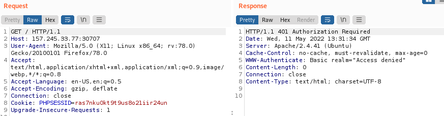
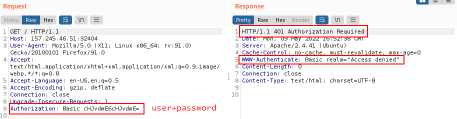
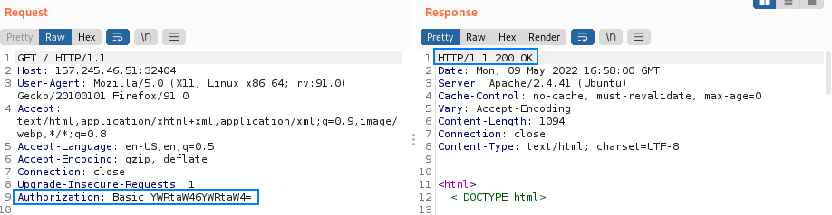

Authentication Methods
Multi-Factor Authentication
Multi-Factor Authentication, commonly known as MFA (or 2FA when there are just two factors involved), can result in a much more robust authentication process.
Factors are separated into three different domains:
• something the user
knows → for example, a username or password
• something the user
has → like a hardware token
• something the user
is → usually a biometric fingerprint
When an authentication process requires the entity to send data that belongs to more than one of these domains, it should be considered an MFA process. Single Factor Authentication usually requires something the user knows:
▪ Username + Password
Form-Based Authentication
The most common authentication method for web applications is Form-Based Authentication (FBA).
• The application presents an
HTML form where the user inputs their username and password, and then access is granted after comparing the received data against a backend.
• After a successful login attempt, the application server creates a
session tied to a unique key (usually stored in a cookie). This unique key is passed between the client and the web application on every subsequent communication for the session to be maintained.
• Some web apps require the user to pass through multiple steps of authentication. For example, the first step requires entering the username, the second the password, and the third a One-time Password (OTP) token. An OTP token can originate from a hardware device or mobile application that generates passwords. One-time Passwords usually last for a limited amount of time, for example, 30 seconds, and are valid for a single login attempt, hence the name one-time.
◇ It should be noted that multi-step login procedures could suffer from
business logic vulnerabilities. For example, Step-3 might take for granted that Step-1 and Step-2 have been completed successfully
HTTP Based Authentication
A HTTP-based login functionality, can specify different authentication schemes such as:
◇ Basic
◇ Digest
◇ NTLM
Digest and NTLM authentication are more robust then Basic because the data transmitted is hashed and could contain a nonce, but it is still possible to crack or reuse a captured token
1. All HTTP authentication schemes revolve around the 401 status code and the WWW-Authenticate response header and are used by application servers to challenge a client request and provide authentication details (Challenge-Response process).
2. When using HTTP-based authentication, the Authorization header holds the authentication data and should be present in every request for the user to be authenticated.
Failed Login  Successful Login From a network point of view, the abovementioned authentication methods could be less secure than Form-Based Auhentication(FBA) because every request contains authentication data. An attacker that can capture the network traffic in plaintext will also capture credentials. The same would happen if FBA were in place, just not for every request.
Other Forms of Authentication
• Authentication performed by checking the source IP address
◇ A request from localhost or the IP address of a well-known/trusted server could be considered legitimate and allowed because developers assumed that nobody but the intended entity would use this IP address.
• Modern applications could use third parties to authenticate users, such as
SAML. Also, APIs usually require a specific authentication form, often based on a multi-step approach.
• Attacks against API authentication and authorization, Single Sign-On, and OAuth share the same foundations as attacks against classic web applications.